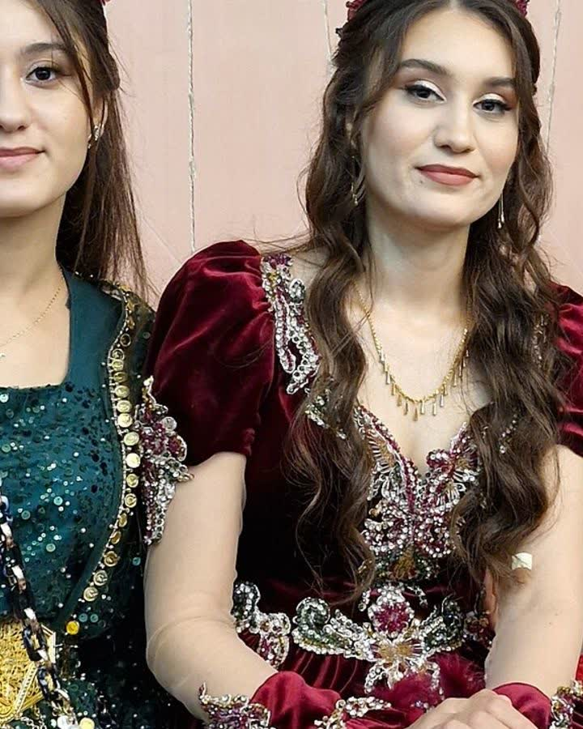
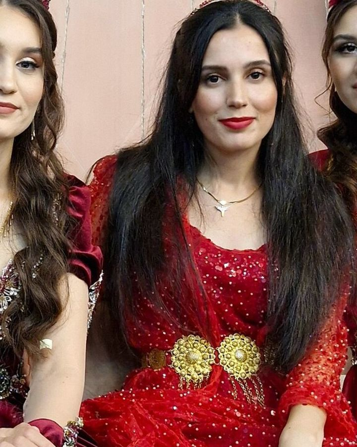

Kapak — Fotoğraf: Çimen berçem · CC BY-SA 4.0 · KaynaklarKına gecesi, düğün hazırlıklarının en hareketli akşamıdır; bu yüzden kıyafet seçimi düğün gününden farklı bir mantık ister. Saatlerce ayakta durmak, halay çekmek, kalabalık bir salonda oturup kalkmak gerekir. Bu rehberde hem gelinin hem davetlilerin kıyafet seçimini sırayla ele alıyoruz: kırmızı ve bordo tonlarının geleneksel yeri, gelinle çakışmamanın nezaket kuralları, mevsime ve ortama göre kumaş tercihi, takı ile renk uyumu, saç ve başlık dengesi, halay çekerken yormayan kesimler, ayakkabı seçimi ve bütçeye göre üç farklı yaklaşım. Yazının içinde renk-anlam-ortam eşleşmesini gösteren bir tablo ve kumaşları karşılaştıran ikinci bir tablo bulacaksınız.
Kıyafet kararını belirleyen üç değişken
Renk ya da model seçmeden önce üç soruyu netleştirin: Geceye hangi rolle katılıyorsunuz (gelin, gelinin ya da damadın birinci derece yakını, davetli), gece nerede yapılıyor (kapalı salon, ev, bahçe) ve hangi mevsimdesiniz. Bu üçü belli olmadan yapılan seçim genellikle iki sorunla biter: ya kumaş ortama göre fazla sıcak kalır ya da renk gelinin paletiyle çarpışır. Rolünüz sizi ne kadar öne çıkaracağınızı, ortam kumaş ve ayakkabıyı, mevsim ise katman sayısını belirler. Aşağıdaki bölümler bu üç değişkeni sırayla çözüyor.
Ortama göre seçim: salon, ev ve bahçe
Kapalı salonlarda kalabalık, sahne ışıkları ve müzik nedeniyle iç sıcaklık dışarıdan çoğunlukla 4-6 derece yüksek seyreder. Bu yüzden salon kınalarında kalın astarlı ve kadife elbiseler ilk yarım saatten sonra yorucu olur.
- Kapalı salon: Nefes alan astar, hafif kumaş, kol ağzı bol kesim. Ter izini az gösteren koyu ya da desenli yüzeyler tercih edilir.
- Ev kınası: Oturma düzeni çoğu zaman yer minderi ya da alçak sedirdir. Dar kalıp ve yırtmaçlı etek burada rahatsız eder; geniş etekli, şalvar kesim ya da bol paçalı modeller çok daha kullanışlıdır.
- Bahçe ve teras: Akşam saatlerinde sıcaklık 8-10 derece düşebilir. Elbiseyle aynı aileden bir şal ya da ince bir ceket hazırda bulunsun. İnce topuklar toprağa ve çim zemine batar; dolgu topuk veya kalın topuk şart.
Renk seçimi: kırmızı ve bordonun geleneksel yeri
Kına gecesinin klasik rengi kırmızıdır ve bu tercih büyük ölçüde geleneğin kendisinden gelir: kına, kırmızı örtü ve kırmızı kuşak aynı görsel dili paylaşır. Ancak kırmızı tek seçenek değildir. Bordo, gül kurusu, zümrüt ve gece mavisi de fotoğrafta güçlü duran, salon ışığında iyi çalışan renklerdir. Seçim yaparken salonun duvar rengini ve masa süslemesinin baskın tonunu da hesaba katın; aynı tonu tekrar ederseniz fotoğraflarda arka planla birleşirsiniz.
| Renk | Görsel etkisi | En uygun ortam | Dikkat edilecek nokta |
|---|---|---|---|
| Kırmızı | Gecenin klasik rengi; canlı ve enerjik | Kapalı salon, akşam | Gelin kırmızı giyecekse davetli tonu kırıp bordoya ya da gül kurusuna geçmeli |
| Bordo | Kırmızının ağırbaşlı hali; kadifede derinlik kazanır | Sonbahar-kış, salon | Koyu duvarlı ve loş salonlarda fotoğrafta silikleşebilir |
| Gül kurusu | Yumuşak; cilt tonunu dengeleyen ara renk | Ev kınası, gündüz, bahçe | Şampanyaya çok yaklaşırsa gelin paletine karışabilir |
| Fuşya | Yüksek doygunluk; kalabalıkta öne çıkar | Salon, gece | Kırmızı ağırlıklı süslemede çarpışabilir |
| Zümrüt yeşili | Altın takıyla güçlü kontrast | Dört mevsim, salon ve bahçe | Yeşil ağırlıklı bahçe fonunda erir; aksesuarla ayrıştırın |
| Gece mavisi | Siyaha canlı bir alternatif | Kış, kapalı salon | Loş ışıkta siyahtan ayrılmaz; parlak aksesuar gerekir |
| Hardal / altın sarısı | Sıcak; yöresel işlemelerle uyumlu | Sonbahar, bahçe | Sarı ışıkta cilt tonunu soldurabilir |
| Krem, beyaz, şampanya | Gelin paletine ait tonlar | Yalnızca gelin | Davetliler için önerilmez |
| Siyah | Pratik, ince gösterir | Şehir salonları | Gecenin neşeli havasına göre renkli şal veya takıyla dengeleyin |
Davetliler için nezaket kuralı: gelinle çakışmayın
Kına gecesinde yazılı olmayan tek kural budur ve uygulaması aslında kolaydır. Geceden bir hafta önce gelinin ne giyeceğini öğrenin; renk, kumaş ve baş örtüsü olup olmadığını sorun. Sonra şu üç başlığa dikkat edin:
- Renk: Gelinin ana rengini birebir tekrar etmeyin. Gelin kırmızı giyiyorsa siz bordo, gül kurusu veya zümrüde geçin. Beyaz, krem ve şampanya davetlide her koşulda tartışma yaratır.
- Örtü ve başlık: Gelinin kırmızı örtüsü gecenin simgesidir. Davetlinin aynı biçimde bir kırmızı örtü takması kadrajda karışıklık yaratır. Örtü kullanacaksanız farklı bir renk ve bağlama biçimi seçin. Örtü ve bağlama seçenekleri için püskül ve örtü modellerine göz atabilirsiniz.
- Parlaklık: Yoğun payetli ve taşlı bir kıyafet flaşta gelinden daha fazla ışık yakalar. Davetliyseniz parlaklığı tek bir parçaya, tercihen kemere ya da küpeye bırakın.
Mevsime göre kumaş seçimi
Kumaş, gecenin sonunda kendinizi nasıl hissedeceğinizi renkten daha çok belirler. Aşağıdaki tablo, kına gecelerinde en sık tercih edilen kumaşları nefes alma, kırışma ve bakım açısından karşılaştırıyor.
| Kumaş | En uygun mevsim | Nefes alma | Kırışma | Yıkama önerisi | Halay konforu |
|---|---|---|---|---|---|
| Pamuklu / patiska | Yaz, bahçe | Yüksek | Yüksek | 30 °C hassas program | İyi, ancak oturunca kolay kırışır |
| Viskon | Dört mevsim | Orta-yüksek | Düşük | 30 °C, düşük devirde sıkma | Çok iyi; döküm ve esneklik dengeli |
| Şifon (astarlı) | İlkbahar-yaz | Yüksek | Düşük | Elde, 20-30 °C | İyi; katmanlar hareketle açılır |
| Saten (polyester) | Sonbahar-kış, salon | Düşük | Orta | 30 °C, tersyüz çevirerek | Orta; ter izini en çok gösteren yüzey |
| İpek | İlkbahar-sonbahar | Yüksek | Orta | Soğuk suda elde veya kuru temizleme | İyi, ama lekeye karşı hassas |
| Kadife | Kış | Düşük | Düşük | Kuru temizleme | Zayıf; ağır ve sıcak tutar |
Kalabalık bir salon kınasında en dengeli tercih genellikle viskon ya da astarlı şifondur. Kadifeyi yalnızca kış aylarında ve serin salonlarda, tercihen kolsuz veya kısa kollu modelde kullanın.
Kesim: halay çekerken rahat etmek
Kına gecesinin fiziksel yükü hafife alınmamalı. Bir halay turu birkaç dakika sürer ve gece boyunca defalarca tekrarlanır. Kolun omuz hizasına kalkabilmesi için koltuk altı bolluğu şart; dar kesim ceket ve kolun sıkı oturduğu modeller birkaç turdan sonra sıkıntı verir. Etek boyu ayak bileğini geçiyorsa, halayda basılıp yırtılma riskine karşı en az 2-3 santimetre yerden yukarıda dursun. Bel oturtmalı, etek kısmı geniş kesimler hem oturup kalkmayı hem de dönüşleri kolaylaştırır. Geleneksel kesimlerin bu konudaki avantajını görmek için kıraş fistan modellerini inceleyebilirsiniz; geniş etek ve bol kol yapısı hareket için tasarlanmıştır. Erkek davetliler için şal û şepik takımlarının bol paça yapısı da aynı rahatlığı sağlar.
Takı ve aksesuar uyumu: altın mı, gümüş mü?
Metal seçimini kıyafetin sıcak ya da soğuk renk ailesinde olması belirler. Kırmızı, bordo, mercan, hardal ve haki gibi sıcak tonlarla altın sarısı; safir, zümrüt, mor, gri ve buz mavisi gibi soğuk tonlarla gümüş daha uyumlu görünür. İki metali birlikte kullanacaksanız, karışımı tek bir parçada toplayın; farklı parçalarda dağıtmak dağınık bir görüntü yaratır.
- Kolye: Kapalı yakalı elbisede 40-45 santimetrelik kısa kolye boyun bölgesini kalabalık gösterir; V yakada 45-50 santimetre daha dengelidir.
- Küpe: Saç toplandığında 5-8 santimetrelik sarkıtlı küpeler boynu uzatır. Saç açıksa daha kısa ve hacimli modeller görünür kalır.
- Bilezik: Halay sırasında birbirine vuran ağır bilezikler yorar; 3-5 ince bilezik hem sesi hem ağırlığı dengeler.
- Kemer: Sade bir elbiseyi en hızlı dönüştüren parça kemerdir. Kombin fikirleri için aksesuar bölümüne bakabilirsiniz.
Saç, başlık ve makyaj dengesi
Başlık veya örtü kullanacaksanız saç modelini ona göre kurun: alından yükseltilmiş topuz, örtünün düzgün oturmasını zorlaştırır. Örtü altına yapılacak alçak topuz, gece boyunca daha az kayar. Toplu saçta ense açık kaldığı için kolye ve küpe daha çok görünür; bu durumda takı sayısını azaltmak dengeyi korur. Işıklar altında yüzün parlamaması için mat bitişli ürünler tercih edilir. Genel kural şudur: gözler ya da dudak öne çıksın, ikisi birden değil; işlemeli ve renkli bir kıyafette makyajın sade kalması sonucu daha derli toplu gösterir.
Ayakkabı: bütün geceyi ayakta geçirmenin formülü
- Topuk yüksekliğini 3-5 santimetre aralığında tutun; kalın topuk veya dolgu, ince topuktan çok daha dayanıklıdır.
- Yeni ayakkabıyı geceden en az 2-3 gün önce evde günde 30'ar dakika giyerek açın.
- Ön taban ve topuk bölgesine jel ped ekleyin; basıncı dağıtır.
- Bahçe kınasında topuğun batmasını önleyen geniş tabanlı modelleri seçin.
- Çantada yedek bir babet bulundurun. Gecenin ikinci yarısında en çok işe yarayan parça budur.
Bütçeye göre üç yaklaşım
Ekonomik: Sade, düz renk ve iyi kesimli tek bir elbise alın; karakteri kemer, şal ve küpeyle kurun. Aynı elbise farklı aksesuarlarla birden çok davete gidebilir. Orta bütçe: İşlemeli yaka ve kol detayı olan yöresel kesimli bir elbise, hem gecede hem sonraki kutlamalarda kullanılabilir. Geniş bütçe: Ölçüye göre terzi dikimi. Burada en kritik nokta prova takvimidir: ilk prova geceden en az 3 hafta, son prova ise 5-7 gün önce yapılmalıdır. Hangi bütçede olursanız olun, kumaş kalitesine model süslemesinden daha fazla pay ayırmak uzun vadede daha iyi sonuç verir.
Adım adım seçim planı
- Geceden 3-4 hafta önce ortamı ve tahmini hava durumunu öğrenin.
- Gelinin rengini ve örtü tercihini teyit edin.
- Renk ailesini belirleyin (sıcak ya da soğuk), sonra metal seçimini buna göre yapın.
- Mevsime uygun kumaşı yukarıdaki tablodan seçin.
- Elbiseyi alıp oturarak, kolları kaldırarak ve birkaç adım yürüyerek deneyin.
- Ayakkabıyı 2-3 gün önceden açın, gerekirse boy düzeltmesi için terziye gidin.
- Aksesuarları elbiseyle birlikte yayıp bakın; fazla gelen bir parçayı çıkarın.
- Gece öncesi kıyafeti asılı bırakın; kırışan kumaşlarda buharlı ütüyü 10-15 santimetre mesafeden kullanın.
Gece sonrası: leke ve bakım
Kına, kumaşta kalıcı iz bırakabilen doğal bir boyadır. Kına tepsisi taşıyacaksanız kolları sıvanabilen bir model seçin. Leke tazeyken bol soğuk suyla durulayın; sıcak su lekeyi sabitler. İpek, kadife ve işlemeli kumaşlarda kendiniz müdahale etmeyin, doğrudan kuru temizlemeye götürün ve lekenin ne olduğunu söyleyin. Ter izine karşı koltuk altı pedi kullanmak, özellikle saten kumaşlarda gece boyunca fark yaratır. Kıyafeti ertesi gün havalandırıp astarını kontrol etmek, bir sonraki davete hazır tutmanın en basit yoludur.
Daha fazla kombin ve bakım içeriği için blog bölümüne, sık sorulan konular için SSS sayfasına göz atabilirsiniz.
Sıkça Sorulan Sorular
Kına gecesinde davetli olarak kırmızı giyilir mi?
Evet, kırmızı kına gecesinin geleneksel rengidir ve davetliler de giyebilir. Ancak gelin kırmızı giyecekse tonu kırmak nezaket sayılır; bordo, gül kurusu veya zümrüt gibi renkler hem uyumlu kalır hem de gelinle çakışmaz. Geceden bir hafta önce gelinin rengini öğrenmek en pratik çözümdür.
Kına gecesine beyaz veya krem elbiseyle gidilir mi?
Davetliler için önerilmez. Beyaz, krem ve şampanya tonları gelinin paletine aittir ve fotoğraflarda karışıklık yaratır. Açık renk giymek istiyorsanız pudra, gül kurusu veya açık haki gibi tonlara yönelmek daha güvenli bir tercihtir.
Halay çekerken rahat edeceğim kesim hangisi?
Bel oturtmalı, etek kısmı geniş kesimler en rahat seçenektir. Koltuk altında bolluk bırakan modeller kolun omuz hizasına kalkmasını kolaylaştırır. Etek boyu ayak bileğini geçiyorsa yerden 2-3 santimetre yukarıda durması, halay sırasında basılma riskini azaltır.
Kına gecesi için hangi kumaş en uygun?
Kapalı ve kalabalık salonlarda viskon ile astarlı şifon en dengeli seçeneklerdir; nefes alır ve kolay kırışmaz. Kadife yalnızca kış aylarında ve serin ortamlarda uygundur. Saten şık görünür ancak ter izini en çok gösteren kumaştır.
Altın mı gümüş mü takmalıyım?
Kıyafetinizin renk ailesine bakın. Kırmızı, bordo, mercan ve hardal gibi sıcak tonlarla altın sarısı; safir, zümrüt, mor ve gri gibi soğuk tonlarla gümüş daha uyumlu görünür. İki metali karıştıracaksanız, karışımı tek bir parçada toplamak daha derli toplu durur.
Kına lekesi kıyafetten çıkar mı?
Kına doğal bir boyadır ve kumaşta kalıcı iz bırakabilir. Leke tazeyken bol soğuk suyla durulayın; sıcak su lekeyi sabitler. İpek, kadife ve işlemeli kumaşlarda kendiniz müdahale etmeden doğrudan kuru temizlemeye götürmek en güvenli yoldur.
Kültürden Kareler
